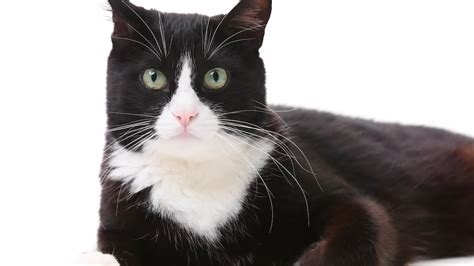

Talking about my cats
This is a web page all about my family's two cats
Max
First here are somethings about Max.
- He is the younger of the two
- He is a fluffy kitty
- He is very vocal a decent amount of the time (Like when he wants food or attention)
- He likes to claim spots sometimes stealing ones from others
- I would say he is energetic
Sparrow
Next here are things about Sparrow.
- He is the older of the two
- He is a bit overweight (and that's putting it lightly)
- He is a lazy boy
- We named after the street we were living on at the time we adopted him
Their similarities
And now here are things that they have in common.
-
They are both tuxedo cats

- We adopted them both at seperate times when they were kittens (We adopted Sparrow back when we lived in north carolina, and then we adopted Max a few years after we've moved to Beaverton)
- They both don't like strangers
- They also tend to hide under the bed when They're scared or stressed out
And that is all, thanks for reading about my cats!